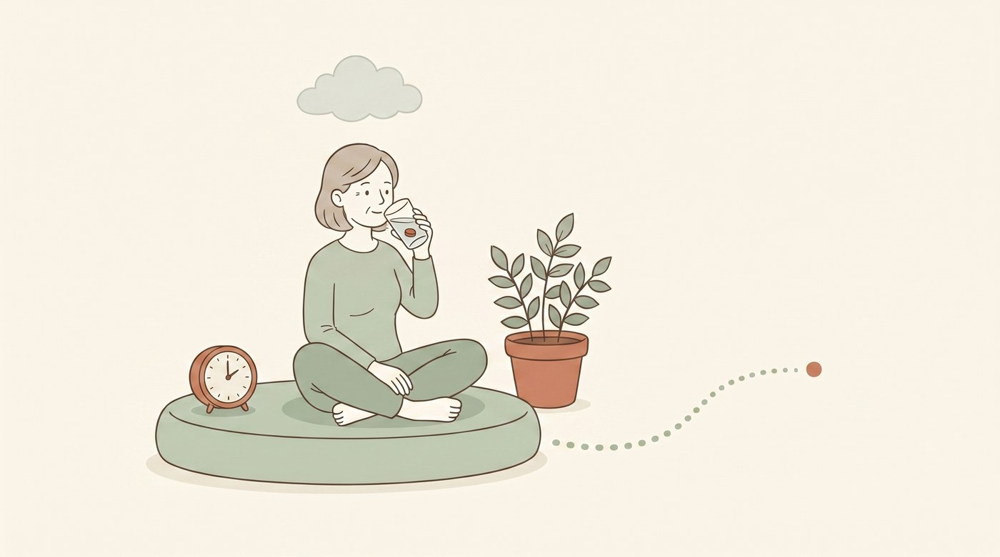
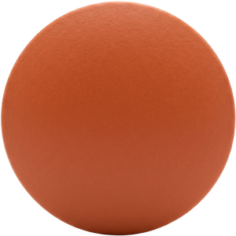
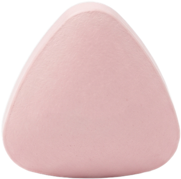
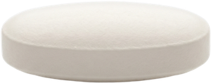
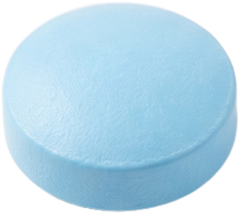
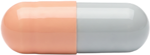
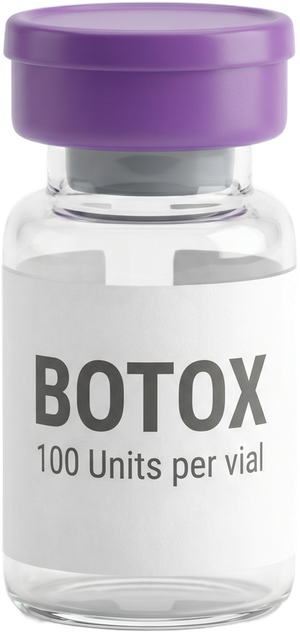

There is no single migraine pill that is right for everyone. The good news is that there is a clear, evidence based ladder, and a clara doctor matches the right rung to your history.
Good migraine care is a partnership: the right medicine, started gently, and adjusted as we learn what works for you.
Migraine medicine has two big jobs.
Most people start with acute treatment alone, and some add a daily preventive once attacks become frequent.(1, 2) A clara doctor decides which medicines fit your history and other conditions, starts with the gentlest option, and steps up only if it is needed.
Nearly every acute migraine medicine works better the sooner it is taken. Taken while the pain is still mild, a medicine is far more likely to stop the attack than the same dose taken hours later once the migraine is in full swing.(1, 3)

clara follows a simple, three step ladder for acute treatment. The aim is to use the gentlest option that reliably works for you, taken as early in the attack as possible.(1)

For most attacks, the first option is a simple over the counter style medicine taken at the first sign. Naproxen and ibuprofen have the strongest evidence, with diclofenac, celecoxib, and acetaminophen as alternatives depending on your stomach, kidneys, and other medicines.(1, 5)

Triptans are medicines made specifically for migraine that calm the overactive nerve and vessel signals behind an attack. For more disabling migraines, or when a plain anti-inflammatory is not enough, a triptan taken together with naproxen gives a larger benefit than either medicine alone.(1, 7, 13) If one triptan does not help, that does not mean the others will fail, so it is worth trying a second before moving on.(3)
Because triptans gently narrow blood vessels, they are not used if you have heart disease, a past heart attack, a past stroke or mini stroke (TIA), poorly controlled blood pressure, or migraine with weakness on one side or brainstem aura. Mild, harmless effects like flushing, tingling, or a brief feeling of tightness in the chest or neck are common and pass on their own.(6) Your clara doctor checks for all of this before prescribing.

Gepants are a newer class that blocks CGRP, a messenger molecule that switches on migraine pain.(5) They do not narrow blood vessels, so they carry no restriction related to the heart, which makes them a good choice when triptans have not worked or cannot be taken.(8, 9)
If attacks are frequent or very disabling, a daily preventive medicine can make them rarer and milder over time. Prevention is usually considered once you are having about four or more migraine days a month, and sometimes with fewer if attacks are severe and acute treatment is not keeping up.(2)

A low dose taken at night. It has the longest track record of any migraine preventive and is a good fit when poor sleep or tension headaches travel alongside the migraines.(2)

An SNRI taken daily. It is a useful alternative to amitriptyline, and is often preferred when low mood or anxiety are also part of the picture.(2)
The same gepant used to stop an attack can also be taken on a set every other day schedule to prevent them, which makes it a convenient option when a first line preventive has not been the right fit.(10)
Preventives work gradually, so give one a fair trial of six to eight weeks at the right dose before judging it. The goal is to cut your migraine days roughly in half and to take the edge off the attacks you do get, not to reach zero.(2)
Migraine is called chronic when you have headaches on 15 or more days a month for more than three months, with at least 8 of those days being migraines.(4) At that point a clara doctor may suggest a treatment made specifically for chronic migraine.

A set of small injections given around the head and neck about every 12 weeks. In the trials that led to its approval, roughly half of people with chronic migraine saw their headache days drop by more than half.(12) It is proven for chronic migraine but not for less frequent (episodic) migraine, and it is given in clinic, so clara arranges this through in person care rather than as a medicine mailed to you.
Acute medicines are wonderful when used for the occasional attack, but taking them on too many days a month can backfire and cause more frequent headaches, sometimes called rebound or medication overuse headache.(11) A simple rule of thumb keeps you on the safe side:
If you find yourself reaching for acute medicine on more days than this, that is a signal to talk with your clara doctor about a preventive, not a reason to push through.(11)
You may notice some familiar painkillers are missing. clara does not prescribe opioids (such as codeine or oxycodone) or butalbital pills for migraine. They tend to work poorly for migraine, can become habit forming, and are among the most common reasons headaches become more frequent over time.(11)
Some proven preventives that need closer in person monitoring, such as certain blood pressure medicines, anti-seizure medicines, and the injectable CGRP antibodies, sit outside clara's online service. If your doctor feels one of these is the best fit, they will help you connect with in person care.
Your doctor weighs your attack pattern, your other health conditions, and what has and has not worked before, then adjusts as you go. You are never locked into a first choice, and you can message your care team any time something is not feeling right.
This guide is general education from your clara care team and is not a substitute for personal medical advice. Medicines, doses, and suitability are decided by your clara doctor based on your individual health. Always follow the instructions that come with your own prescription.